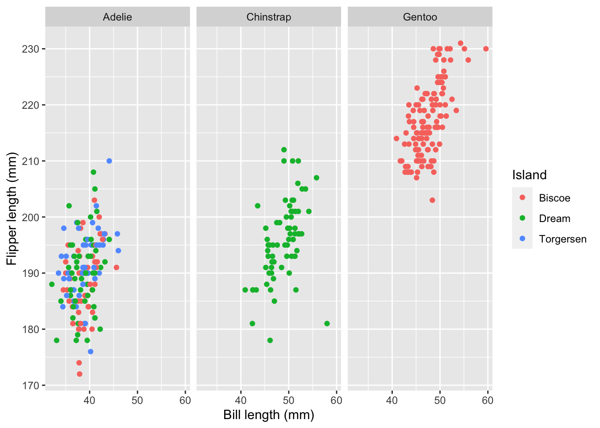
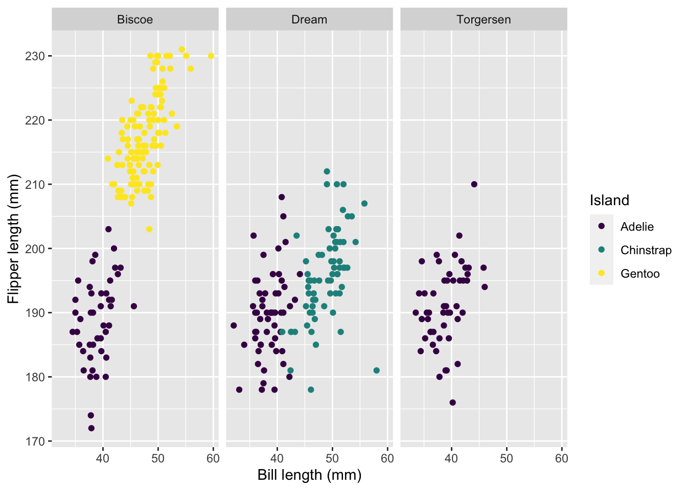

library(tidyverse)
library(palmerpenguins)
library(viridis) # we'll use to customize colorsExploratory Data Analysis I
STA 101
Bulletin
- Lab 1 due Thursday at 11:59pm on gradescope
- How to render to pdf directly
Today
We’ll begin today by visiting the last figure of ae2.
By the end of today you will…
- harness the power of
filter()using logic - create and interpret scatter plots, bar plots, stacked bar plots, facet plots and be able to look up and use other
ggplotgeometries
Getting started
Download this application exercise by pasting the code below into your console
download.file("https://sta101-fa22.netlify.app/static/appex/ae3.qmd",
destfile = "ae3.qmd")Load packages
Load data
data(penguins)Type ?palmerpenguins to learn more about this package. Or better yet, check it out here.
Logic in R
The table of logical operators below will be helpful as you work with filtering.
| operator | definition |
|---|---|
< |
is less than? |
<= |
is less than or equal to? |
> |
is greater than? |
>= |
is greater than or equal to? |
== |
is exactly equal to? |
!= |
is not equal to? |
is.na(x) |
is x NA? |
!is.na(x) |
is x not NA? |
x %in% y |
is x in y? |
!(x %in% y) |
is x not in y? |
x & y |
is x AND y? |
x \| y |
is x OR y? |
!x |
is not x? |
The above operations return TRUE (1) or FALSE (0).
Examples
How many penguins have flipper length > 200 mm?
penguins %>%
filter(flipper_length_mm > 200)# A tibble: 148 × 8
species island bill_length_mm bill_depth_mm flipper_length_mm body_mass_g
<fct> <fct> <dbl> <dbl> <int> <int>
1 Adelie Dream 35.7 18 202 3550
2 Adelie Dream 41.1 18.1 205 4300
3 Adelie Dream 40.8 18.9 208 4300
4 Adelie Biscoe 41 20 203 4725
5 Adelie Torgersen 41.4 18.5 202 3875
6 Adelie Torgersen 44.1 18 210 4000
7 Adelie Dream 41.5 18.5 201 4000
8 Gentoo Biscoe 46.1 13.2 211 4500
9 Gentoo Biscoe 50 16.3 230 5700
10 Gentoo Biscoe 48.7 14.1 210 4450
# ℹ 138 more rows
# ℹ 2 more variables: sex <fct>, year <int>- We could also pipe into
nrow()to quickly grab the number of rows. Try it!
How many female penguins have flipper length > 200 mm?
penguins %>%
filter(flipper_length_mm > 200 & (sex == "female"))# A tibble: 60 × 8
species island bill_length_mm bill_depth_mm flipper_length_mm body_mass_g
<fct> <fct> <dbl> <dbl> <int> <int>
1 Adelie Dream 35.7 18 202 3550
2 Gentoo Biscoe 46.1 13.2 211 4500
3 Gentoo Biscoe 48.7 14.1 210 4450
4 Gentoo Biscoe 46.5 13.5 210 4550
5 Gentoo Biscoe 45.4 14.6 211 4800
6 Gentoo Biscoe 43.3 13.4 209 4400
7 Gentoo Biscoe 40.9 13.7 214 4650
8 Gentoo Biscoe 45.5 13.7 214 4650
9 Gentoo Biscoe 45.8 14.6 210 4200
10 Gentoo Biscoe 42 13.5 210 4150
# ℹ 50 more rows
# ℹ 2 more variables: sex <fct>, year <int>For how many penguins was flipper length not measured (i.e. reported as NA)?
penguins %>%
filter(is.na(flipper_length_mm))# A tibble: 2 × 8
species island bill_length_mm bill_depth_mm flipper_length_mm body_mass_g
<fct> <fct> <dbl> <dbl> <int> <int>
1 Adelie Torgersen NA NA NA NA
2 Gentoo Biscoe NA NA NA NA
# ℹ 2 more variables: sex <fct>, year <int>How many penguins are of species Adelie or Chinstrap?
penguins %>%
filter(species %in% c("Adelie", "Chinstrap"))# A tibble: 220 × 8
species island bill_length_mm bill_depth_mm flipper_length_mm body_mass_g
<fct> <fct> <dbl> <dbl> <int> <int>
1 Adelie Torgersen 39.1 18.7 181 3750
2 Adelie Torgersen 39.5 17.4 186 3800
3 Adelie Torgersen 40.3 18 195 3250
4 Adelie Torgersen NA NA NA NA
5 Adelie Torgersen 36.7 19.3 193 3450
6 Adelie Torgersen 39.3 20.6 190 3650
7 Adelie Torgersen 38.9 17.8 181 3625
8 Adelie Torgersen 39.2 19.6 195 4675
9 Adelie Torgersen 34.1 18.1 193 3475
10 Adelie Torgersen 42 20.2 190 4250
# ℹ 210 more rows
# ℹ 2 more variables: sex <fct>, year <int>Exercise 1:
Double check the Adelie and Chinstrap total using count().
# code hereExercise 2:
What is the mean bill length of Adelie penguins? Hint: filter and then use summarize() as seen in lab 1.
# code hereExercise 3:
How many penguins have a bill length greater than 40 mm or a bill depth less than 15 mm?
# code hereExercise 4:
What proportion of penguins are from the island Torgersen?
# code herePlots
The procedure used to construct plots can be summarized using the code below.
ggplot(data = [data set],
mapping = aes(x = [x-variable], y = [y-variable])) +
geom_xxx() +
geom_xxx() +
other optionsExample: bar plot
ggplot(data = penguins,
mapping = aes(x = species)) +
geom_bar() +
labs(x = "Species", y = "Count", title = "Palmer penguin species")
Example: stacked bar plot
penguins %>%
filter(!is.na(sex)) %>%
ggplot(mapping = aes(x = species, fill = sex)) +
geom_bar(position = "fill") +
labs(x = "Species", y = "Count", title = "Palmer penguin species")
- try with and without
position = "fill"
Aesthetics
An aesthetic is a visual property in your plot that is derived from the data.
- shape
- color
- size
- alpha (transparency)
We can map a variable in our data set to a color, a size, a transparency, and so on. The aesthetics that can be used with each geom_ can be found in the documentation.
Here we are going to use the viridis package, which has more color-blind accessible colors. scale_color_viridis specifies which colors you want to use. You can learn more about the options here.
Other sources that can be helpful in devising accessible color schemes include Color Brewer, the Wes Anderson package, and the cividis package.
This visualization shows a scatterplot of bill length (x variable) and flipper length (y variable). Using the viridis function, we make points for male penguins purple and female penguins yellow. We also add axes labels and a title.
ggplot(data = penguins,
mapping = aes(x = bill_length_mm, y = flipper_length_mm,
color = sex)) +
geom_point() +
labs(title = "Flipper length vs bill length",
x = "Bill length (mm)", y = "Flipper length (mm)") +
scale_color_viridis(discrete=TRUE, option = "D", name="Sex")Warning: Removed 11 rows containing missing values (`geom_point()`).
Exercise 5:
Can you remove the NAs from the above visualization?
Question: What will the visualization look like below? Write your answer down before running the code.
ggplot(data = penguins,
mapping = aes(x = bill_length_mm, y = flipper_length_mm,
shape = sex)) +
geom_point() +
labs(title = "Flipper length vs bill length",
x = "Bill length (mm)", y = "Flipper length (mm)") +
scale_color_viridis(discrete=TRUE, option = "D", name="Sex")Faceting
We can use smaller plots to display different subsets of the data using faceting. This is helpful to examine conditional relationships.
penguins %>%
ggplot(aes(x = bill_length_mm, flipper_length_mm, color = island)) +
geom_point() +
facet_wrap(~ species) +
labs(x = "Bill length (mm)", y = "Flipper length (mm)", color = "Island")Warning: Removed 2 rows containing missing values (`geom_point()`).
penguins %>%
ggplot(aes(x = bill_length_mm, flipper_length_mm, color = species)) +
geom_point() +
facet_wrap(~ island) +
labs(x = "Bill length (mm)", y = "Flipper length (mm)", color = "Island") +
scale_color_viridis(discrete = TRUE)Warning: Removed 2 rows containing missing values (`geom_point()`).
ggplot activity
# code hereAdditional resources
- Find more ggplot geometries at https://ggplot2.tidyverse.org/reference/